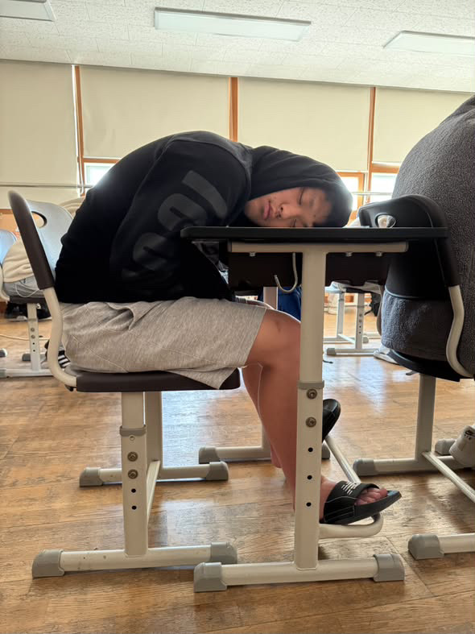
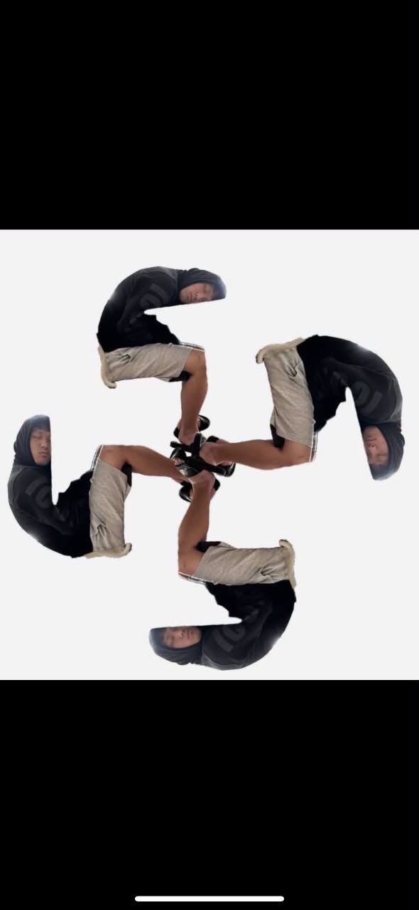

“
제1장 1절 — 그분이 책상에 머리를 두시니, 주변의 소란은 잠시 침묵하였더라.
복음서 · 고요의 장고요한 책상, 접힌 몸, 그리고 끝나지 않는 낮잠의 계시. 이곳은 한 인물을 둘러싼 과장된 숭배를 경전의 문법으로 기록한 가상의 풍자 페이지다.
경전 펼치기 ↘
제1장 1절 — 그분이 책상에 머리를 두시니, 주변의 소란은 잠시 침묵하였더라.
복음서 · 고요의 장제1장 2절 — 깨어 있음만이 지혜는 아니며, 때로는 아무것도 하지 않음이 가장 깊은 선언이니라.
잠언 · 휴식의 장제1장 3절 — 믿음이 부족한 자는 알람을 맞추고, 믿음이 넘치는 자는 알람을 끄느니라.
전승 · 알람의 장첫째, 침묵. 불필요한 말은 줄이고 존재감은 남긴다.
둘째, 휴식. 모든 과업에는 잠시 멈추는 순간이 필요하다. 단, 제출 기한은 확인할 것.
셋째, 귀환. 종이 울리면 현실로 돌아온다. 이 교단은 출석을 대신해 주지 않는다.
